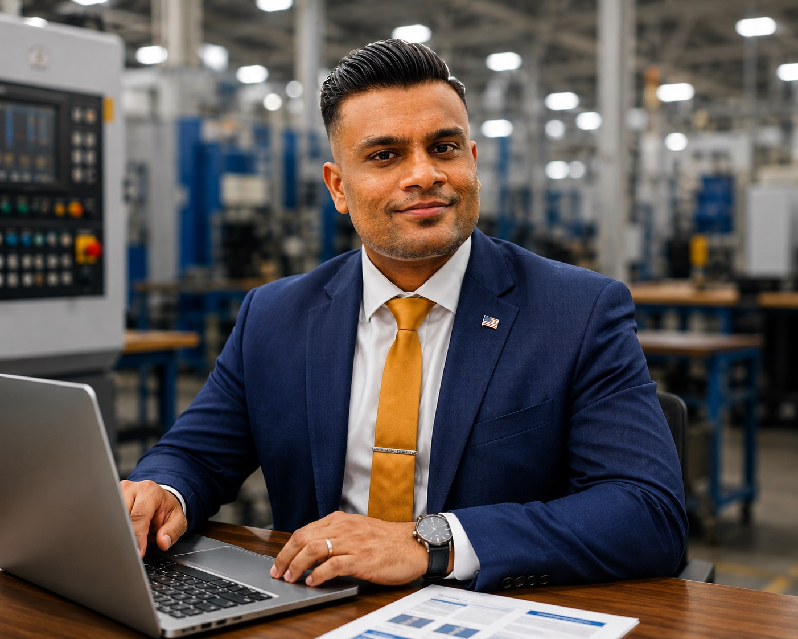

Jul 2024 – Present
Senior Manufacturing / Quality Engineer II
Randolph and Baldwin, Inc. | Ayer, MA
- Lead product realization from requirements through validation, FAI, and production launch.
- Support AS9100/AS9102, APQP, PFMEA, PPAP, FAIR, RCCA, CAPA, and supplier quality.
- Drive manufacturing improvement, quality performance, and inspection readiness.